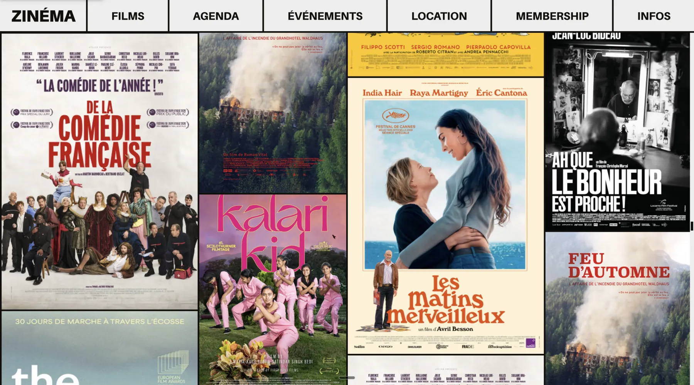

Voir le siteSite vitrine — Cinéma d'art et essai
Zinéma
Le site du premier cinéma d'art et essai miniplex de Lausanne, rue du Maupas : une page d'accueil pensée comme un mur d'affiches, l'agenda des séances et la carte de membre à portée de clic.
Ce que nous avons fait
- Accueil conçu comme une mosaïque d'affiches : la programmation fait elle-même le décor
- Agenda des séances et fiches films alimentés en continu, du synopsis à l'horaire
- Sections Événements, location de salle et carte de membre réunies dans un même parcours
- Infos pratiques — adresse, billetterie, tarifs, contact — atteignables en deux gestes depuis le mobile